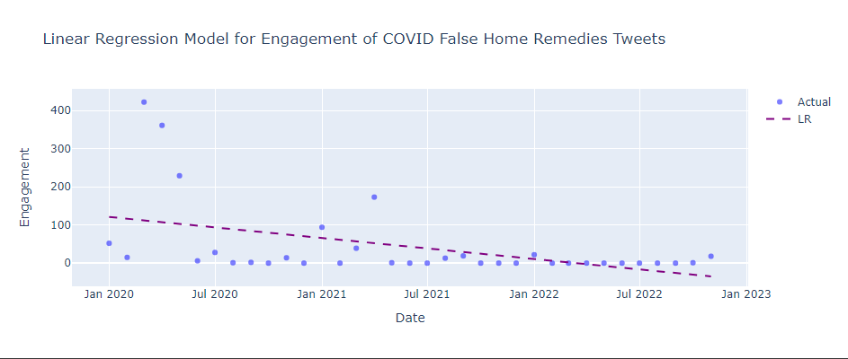
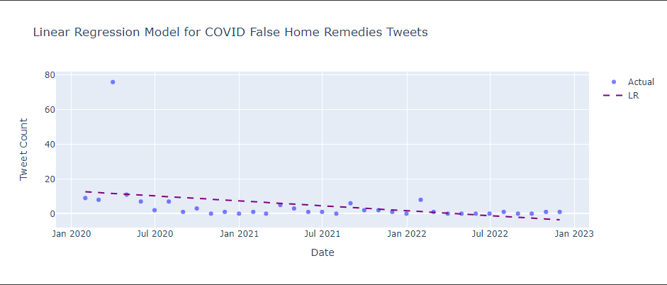
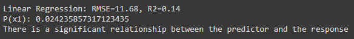

Statistical Test
Linear Regression
Statistical Tests help us understand the data we collect and make inferences. Typically, they are used to examine relationships between variables and test hypotheses. In other words, they are a way of analyzing dadta to see if there is a significant difference between groups. Linear Regression, our chosen statistical test, helps us find a relationship between the predictors and a response variable. What we are trying to do is to create a line of best fit. Naturally, since this a linear regression, we are attempting to find a linear relationship.
This is one of our linear regression models. The predictor is engagement and the response variable is
After running our code, it can be observed that our linear regression has a root mean squared error (RMSE) of 87.2 and a coefficient of determination of R2. Additionally, our p-value is around 0.044. Again, it is less than 0.05 and so it can be said that there is a significant relationship between tweet count and the date as well.
 This is our other linear regression model. The predictor is tweet count and the response variable remains the same. Just from looking at the graph once more, we can see that the data follows a linear path. After running our code, it can be observed that our p-value is around 0.024. Since it is less than 0.05, our significance level, it can be said that there is a significant relationship between engagement and the date.